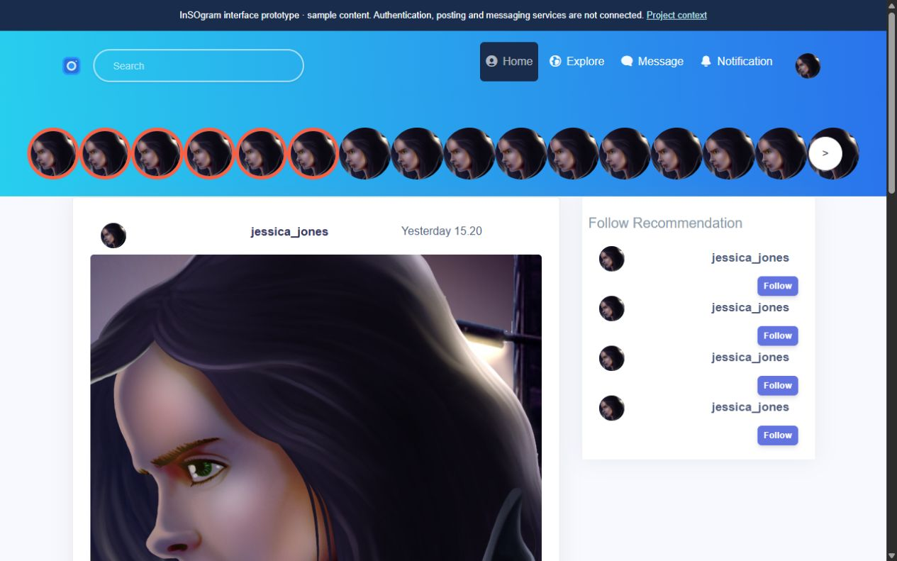

PROJECT DOSSIER / REACT / SOCIAL UI
InSOgram.
A photo-sharing interface built from an original training brief.
The context
The local InSOgram.docx specification names a photo/video social platform. The repository contains the matching React interface; the brief also requests Go GraphQL, PostgreSQL, Redis, and OAuth, which must not be assumed complete from this frontend.
What I built
A photo-sharing interface built from an original training brief.
React production build and browser navigation now pass after restoring direct dependencies, switching to Dart Sass, correcting raster asset imports and repairing hash routing. Login-to-home preview, profile and caption/comment views are frontend demonstrations. The original Go/PostgreSQL/Redis/OAuth and realtime requirements remain unimplemented.
A closer look
